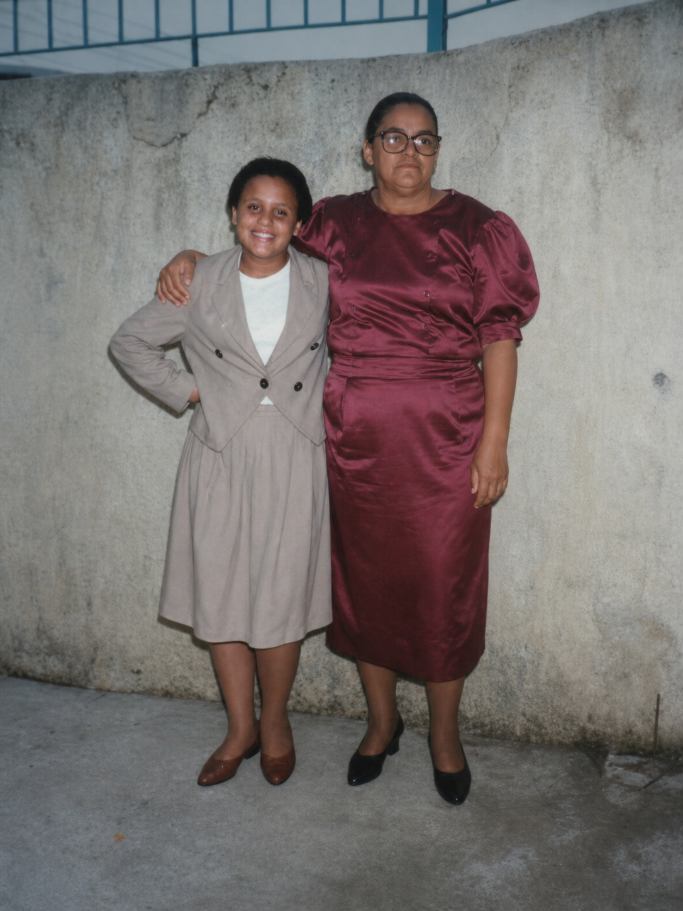
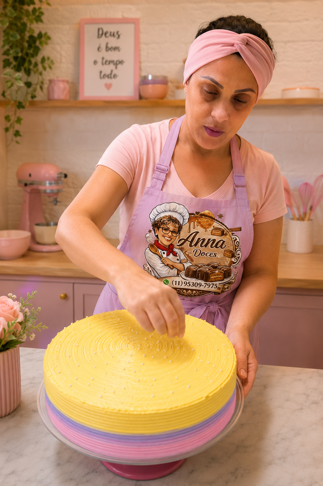
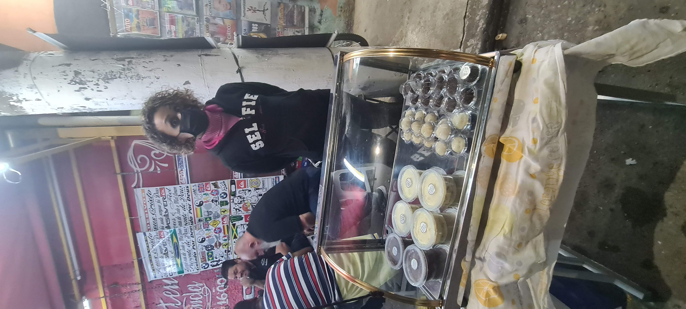
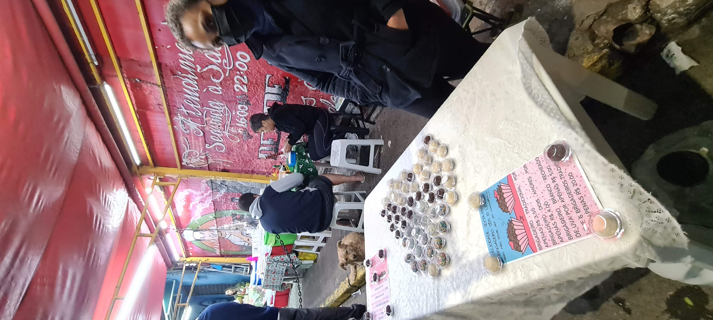
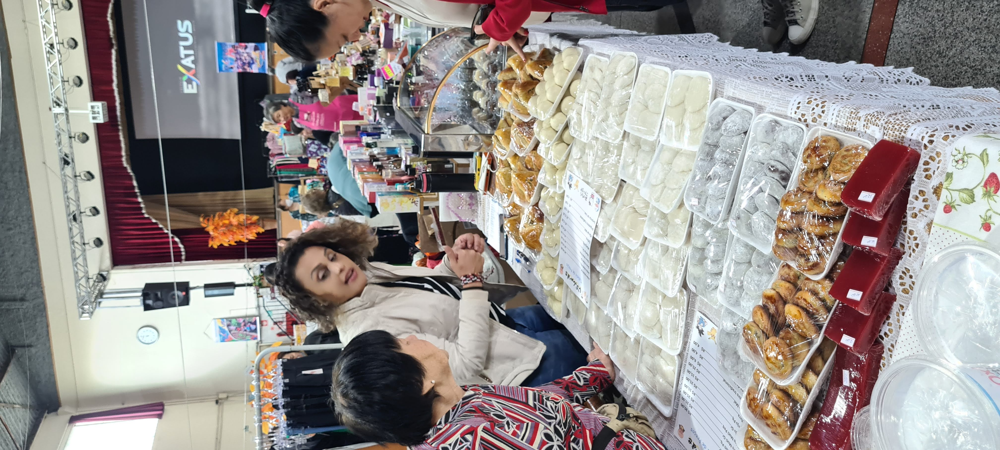

A Anna's Doce, surgiu da necessidade de se reinventar em momentos de crise. Desde muito pequena, adorava ajudar a minha avó na cozinha e com muito amor e paciência me ensinou o prazer de cozinhar.Sempre fui do tipo que o que eu tenho vontade de comer, se não puder pagar, vou aprender a fazer. E assim eu fiz, aprendi a melhorar os bolos de aniversário, docinhos de festa, salgados a princípio para comemorar os aniversários da minha filha. Em 2016, divorciada com uma filha de 5 anos pra sustentar e uma mãe doente, percebi que a renda do trabalho CLT não seria suficiente, então comecei a vender biscoitos amanteigados, bolos caseiros e o que mais me encomendassem, se eu sabia fazer ia atrás para aprender. A internet foi e é minha grande escola, não tenho cursos mas a vontade de aprender me leva a fazer. Com o tempo já morando em SP com meu marido e companheiro de todas as horas, que me apoia muito, vendi doces na rua, sempre como complemento da renda, aprendi a fazer pão de mel, por gostar muito e me lembrar da infância na escola, aonde uma senhora vendia para sustentar os filhos, aquele sabor saudosista me levou a procurar receitas e adaptar ao meu paladar, de lá pra cá tem bastante aceitação dos clientes. Ovos de páscoa,trufas, bombons, também entraram no cardápio e estou sempre em busca de evolução no sabor e qualidade.







